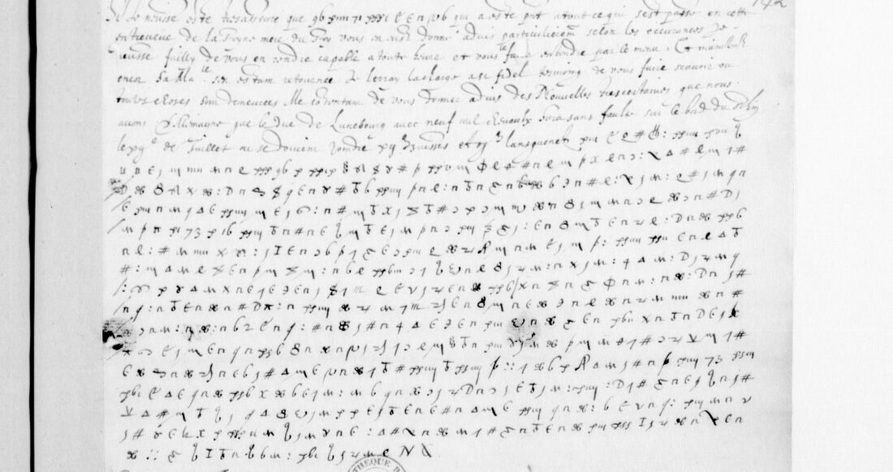

. Wikimedia Commons, public domain.")

At a glanceKnown key applied · none (key obtained, text not read)
- The letters
- Two League war letters from the Duke of Guise (probably) to Mercœur, 27 May and 20 June 1587; DECODE gave no sender.
- Where
- BnF fr. 15564 ff. 119 and 142 (Gallica
btv1b9064027v). - The cipher
- Lasry’s 2022 key, whose many near-identical sign shapes needed a French language model and about twenty passes over 2× crops.
- How it was read
- Every sign of both letters was transcribed; the key gained a dozen values in this hand.
- What it says
- Two thousand Italian or Albanian lances and four thousand reiters promised for August, and a secretary sent with twelve thousand écus to raise nine thousand Swiss; by June, “nous sommes maintenant contraincts de donner ordre a nos affaires”.
- Still open
- Twelve name codes from Lasry’s “unknown” row.
- Credit
- George Lasry recovered the key in 2022; his table is on Tomokiyo’s Cryptiana, but neither letter’s text was published.

01 The two records
| DECODE | folio | date | what it is | signs | signs with a value |
|---|---|---|---|---|---|
| R4162 | f. 119 | 27 May 1587 | one page, 42 lines wholly in cipher | 1,861 | 95.5% |
| R4165 | f. 142 | 20 June 1587 | a slip: seven clear lines of news from Germany, then 16 lines of cipher | 616 letter signs + 7 code groups | 92.9% |
DECODE gives no sender. Lasry’s key calls the cipher “Guise → Mercœur” and Tomokiyo writes “probably from the Duke of Guise”. The texts fit: the writer speaks for the League’s war effort, of “la cause que nous poursuivons de mon costé” and of a meeting at Meaux, and the companion letter f. 78 names “mon frere”. The same cipher is used in ff. 27 and 78 of this volume and in fr. 15565 ff. 105 and 122.
02 The letter of 27 May 1587 (f. 119)
Decoded, not read. The letter was re-read on 23 October 2026 (texts/f119_reading.md, with an English translation): the passages on the levies build sentences, but the opening lines and lines 5, 12, 25, 29–30, 33–34 and 37–38 keep unread runs, between homophones the context does not fix and name codes (24 of 43 sentences clean). In the manuscript’s spelling; […] marks unread signs, [?word] a doubtful word, [21] a name code. The passage on the levies:
Nous avrons sans doubte deux mil lances italiennes ou albanoises et quatre mil reistres, soubs la levée de ce de [21], lesquels les leve pour nous. Il a envoyé son secretaire ve[…] vers [?le] colonel Fifer avec douze mil escus pour arrester et traicter d'une levée de neuf mil suisses, auquel nous n'avons eu encor response, et l'attendons a toutes heures. … L'armée des heretiques, de la grand et [?forte], et composée d'huict mil reistres, douze mil suisses, deux regimens de lansquenets, quatre mil harquebusiers pour Chastillon, leur doibt amener de cavallerie françoise ce qu'ils pourront. [?Je] vous diray que [?je] craigs trop plus les traistres que les ennemis, et le doubte for[…] si nous ne nous resolvons a nous en defaire, ce qu'est tant utile pour la gloire de Dieu et la cause que nous poursuivons.
The Protestant army described is the German and Swiss force that the Huguenot party was raising in 1587 and which crossed into Lorraine in August; Châtillon is François de Coligny, the Admiral’s son, who led its French contingent. “Colonel Fifer” is Ludwig Pfyffer of Lucerne, the Catholic Swiss colonel who raised regiments for the League. The name codes [21], [43], [71] are not in Lasry’s key and are left as numbers.
03 The letter of 20 June 1587 (f. 142)

The clear lines give news from Germany: the duke of Lunebourg with nine thousand horse will be on the Rhine by 20 July. The cipher, joined into running text (f142_running_reading.md; UPPER is a nomenclator group, [?] one unread sign, [x] a supplied letter), is decoded, not read: the middle builds, but unread signs and supplied letters fall in nearly every sentence (2 of 12 clean, 23 October 2026). The middle:
la levee [de] mil lances et quatre mil reistres, qui est ung [i]nstable secours; et a si bien faict par des resolutions precipitees, nous sommes maintenant contrainccts [?] donner ordre a [n]os affaires, qui ne peuvent estre avec telles seurete[z] … si nos premiers desseings eussent esté effectue[z] avec ordre et mesure.
[73] is probably a person the writer is to meet with troops at Meaux; the pronoun “la trouver” suggests a woman, perhaps the Queen Mother, who was negotiating with the League princes in the summer of 1587, but the code is not in Lasry’s key and the identification is not made here.
04 Method
- Prior art. The DECODE records (created 2023) carry no key and no decipherment. Cryptiana’s page on Lasry’s BnF solutions lists ff. 27, 78, 119 and 142 under “Duke of Guise? in BnF fr. 15564 and fr. 15565” and gives the key table (
GL_BnFfr15564.png) and the decipherment of f. 27 only. - Transcription. Every sign labelled from Gallica full-resolution crops: 1,861 signs on f. 119, 623 on f. 142. Nomenclator groups (ff-ligatures for common words, digits for names) count as one sign.
- Decoding. Lasry’s key gives two to seven signs per letter, several of them near-identical shapes. A French language model (5-grams,
fr-1600-letters) chose among each label’s candidate letters and gave a first French text (about 70% sense). - Fixing letters. About twenty passes of three lines each at 2× zoom, comparing each sign with the key and fixing the letter where shape and word agree; for the last runs, a search of the French corpora for phrases that fit the candidate letters (it found arrester, cherchions, en faisant estat, jusques icy).
- Key extensions in this hand, beyond Lasry’s sheet: the hooked sign = D or “de”; ✝ = Q; ɤ = D, T or X; the x-shape = Y or N; 3/ʒ = C or D; 8 = M, B, N or T; the dotted Є = R; ʃ = A; “=ʃ” = P.
- Measurement. Each decryption file carries, per line, the number of signs and the number unresolved; the totals give 95.5% (f. 119) and 92.9% (f. 142), 95.1% of letter signs together. That counts signs given a letter, not sentences that read: the reading audit of 22–23 October 2026 found both letters decoded, not read.
05 What stays open
- 121 letter signs of 2,477, scattered, no run longer than eight: each was retried in three or more zoomed passes and a phrase search. A few look like two-sign code groups (“98”, “89”, “z3”) rather than letters. Longest gaps: f. 142 line 1 (eight signs after “de”, including two ff-groups from Lasry’s unknown row), f. 119 line 3 (four), line 27 (“que [five] eschauffé”).
- Name codes: [21] (twice, a duke), [43], [71] (with “son frere”), [73] (twice, f. 142), [N], [&], [9b], and the groups ffv, ffσ, ffx, ffou. None is in Lasry’s table; each occurs once or twice.
- f. 119: unread runs in the opening lines and lines 5, 12, 25, 29–30, 33–34 and 37–38; the remaining choices are between homophones the context does not fix and nomenclator groups. f. 142: lines 0–2, 9–10 and 13 do not build, and the sign-level transcription was settled in 26 passes; no decipherment or clear copy exists.
- Grades: words in the full files marked with ? or in brackets are C or M; the identifications of Pfyffer and Châtillon are historical, not from the cipher.
Full texts
The transcription and the decryption of every document on this page, so that the reading can be used and checked. Short files are shown here; all are in the repository.
f. 119 (DECODE R4162), 27 May 1587 decoded, not read
The writer (Guise?) tells Mercœur the levy of reiters is assured: by August two thousand Italian or Albanian lances and four thousand reiters; his secretary has gone to colonel Pfyffer with twelve thousand écus to treat for nine thousand Swiss; the heretics' army (eight thousand reiters, twelve thousand Swiss, lansquenets, four thousand arquebusiers for Châtillon) must be defeated, sparing nothing for the glory of God and the cause.
A mechanical decode with holes in most sentences: shown so that the transcription and the key can be checked and improved, not as a reading.
Transcription
# BnF fr. 15564 f. 119 (DECODE R4162), careful pass, glyph labels per manuscript line (images img/yNN.png) # labels: see beam.py/bl.py candidate tables; [..] = nomenclator group; K, Q, U = unidentified sign shapes 00 | [N] [&] [fbn] 'r 'e 'c 'e 'u [f6] 'l 'e 't 't 'r 'e [f6] 'l [fff] 'a 'p 'l 'e 'u g 'e 's 'c 'r 'i 'r 'e [fm] [fff] 't 'i 'r 'a 'n [ffuu] 'd 'e [fffi] 'a 'r 01 | n 6 'e [ffb] 'e 's 't 'i 'c 'y 'p 'r 'e 's 'e 'n 't 'a 'p 'r h 's 'p 'a 'i 'x 'n 'e x 'e 'v 'a 'n 't [ffbm] [f] [fff] 'r 'e 'n 'd 'r 'e 'c 'o 'm 'p 02 | : n [fm] 'm 'a 'n 'd 'e 'r [f6] 'f 'a 'c 'o 'n 'd p 'e X 't 'e q 'o % 'f 'e 'r 'a 'y 'c 'e 'c 'o 'm 'm 'e [ffbm] 'a 'v 'o 'n 's 'r 'e 's 'o 'l 03 | 'u 'de [ffbm] 'y 'g 'o 'u 'v 'e 'r 'n 'e 'r [fbn] p C 'o x 'c 'e 'r 't 'a 'i 'n 'e 'm 'e 'n 't [ffm] [fbn] [ffmm] 'q 'u 'e R E k x [ffmm] 'l 04 | 'e 'n 'v 'i 'e [fm] 'p 'e 'n 's 'e [fbn] 't 'i 'e 'n 's [ffm] 't 'o 'u 't 'e 'a 's 's 'e 'u 'r 6 'e [fm] 'r 'e 's 'o 'l 'u 'e [f6] 'l 05 | 'e 'v 'e 'e [fu] 'r 'e 'i 's 't 'r 'e 's q 8 k # 8 'o 'n 'd 'a 'o 'u 's 't [ffbm] 'a 'v 'r 'o 'n 's 's 'a 'n 's 'd 'o 'u 'b 't 'e 'd 'e 'u 06 | U 6 h T C l m q n % z : l T h n m x n % 7 # l C B j m O h % 6 ) [fm] q # l : D 6 b h T C 6 K % 07 | 't 'r 'e 's 's 'o 'u 'b 's [f6] 'l 'e 'v 'e 'e [f] 'c 'e [f] [21] [fbi] [ffm] 'l 's [fbi] 'l 'e 'v 'e [ffm] [ffbm] 'i 'l 'a 'e 'n 'v 'o 'y 'e 's 'o 'n 's 08 | 's 'e 'c 'r 'e 't 'a 'i 'r 'e 's 'v 'e C h m 'v 'e 'r 's [ffm] 'c 'o 'l 'o 'n 'e 'l 'f 'i 'f 'e 'r 'a 'v 'e 'c 'd 'o 'u Y 'e 'm 'i 'l 'e 's 'c 'u Y 09 | [ffm] 'a 'r 'r 'e 's 't 'e 'r [fm] 't 'r 'a 'i 'c 't 'e 'r 'd 'u 'n 'e 'l 'e 'v 'e 'e 'd 'e 'n 'e 'u 'f 'm 'i 'l 's 'u 'i 's 's 'e 's [fi] [ffm] 'l 10 | [ffbm] 'n 'a 'v 'o 'n 's 'e 'u 'e 'n 'c 'o 'r y 'r 'e 's 'p 'o 'n 's 'e [fm] 'l 'a 't 't 'e 'n 'd 'o 'n 's 'a 't 'o 'u 't 'e 's 'h 'e 'u 'r 'e 's [fm] 'd 11 | 'i q 't 'd 'u 'c y [21] 's 'e 's X 'a 'u 's ) 'i 'r 'e 's 'o 'l 'u k 'u 'i 3 't 'm 'i 'l 'c 'i 'n t 'c 'e 'n 's 'h 'o 'm b 'e 's y Z 'i 12 | 'e P 't 'a 'n 't y % 'e 's 'p 'a 'n 'a [ffuu] 'v 'o 'i 's 'i 'n 's [ffmm] [fi] 's 'i 'e 'n 'd 'v 'i 's [ffbm] 'a 'v 'r 'o 'n 's p [f6] 13 | C C 'a 'n 'd 'r t 'e [ffmm] 's 'e 's 'p 'a 'r 'a 'n 's [fm] 'a 'm 'y 's 'v 'o 'u 'l 'o 'i 't [ffm] 'l 'a 'c 'c 'o 'm 'p 'a 'g 'n 'e 'r [fm] 's 'e 'r 'v 14 | 'i 'r 'l 'a 'r 'm 'e 'e [fn] 'h 'e 'r 'e 't 'i 'q 'u 'e 's 'd 'e 'l 'a 'g C 'a 'n 'd [fm] C 'o C X 'e [fm] 'c 'o 'm 'p 'o 's 'e 'e 'd 'h 'u 'i 'c 't 15 | 8 h T C 6 h % : D 6 % P 7 # % 6 8 h T % # z % ) n % P 6 # U C 6 M h 8 6 m % y T j m % q # n m 16 | 'e X 's 'q 'u 'a 't 'r 'e 'm 'i 'l 'h 'a 'r 'q 'u 'e 'b 'u 's 'i 'e 'r 's [ffuu] 'c 'h 'a 's X 'i 'l 'l 'o 'n 'l 'e 'u C 'd 'o 'i 'b 'a 'm 'e 17 | m 'e 'r [DE?]y 'c 'a 'v 'a 'l 'l 'e 'r 'i 'e 'f 'r 'a 'n 'c 'o 'i 's 'e 'c 'e [ffb] T 's 'p 'o 'u 'r 'r 'o 'n 't [fbn] [fff] 'd 'i 'r j x 18 | [ffm] [fbn] 'c 'r 'a 'i 'g % 't 'r 'o U 'p 'l 'u 's [fbi] 't 'r 'a 'i 's 't 'r 'e 's [ffm] [fbi] 'e 'n 'n 'e 'm 'i 's [fm] 'l 'e 'd 'o 'u 'b 't 19 | 'e 'f 'o 'r x 8 q 's 'i [ffbm] 'n 'e [ffbm] 'r 'e 's 'o 'l 'v 'o 'n 's j [ffbm] 'e 'n 'd 'e 'f 'a 'i 'r 'e 'c 'e 'q 'v 'e 's 't 'a 'n 't E 't 'i 'l 20 | 'e [ffm] [fb] 'g 'l 'o 'i 'r 'e y 'd 'i 'e 'u [fm] [fb] j 'a 'u 's 'e [ffmm] [ffbm] % 'o 'u 'r 's 'u 'i # 'o 'n 's y 'm 'o 'n 'c 'o 's 't 'e 21 | [fbn] m X 'e 's 'p 'a 'r 'g 'n 'e 'r 'i 'n 's 'o 'i 'n 'g 'n 'y 'd 'i 'l 'i 'g 'e 'n 'c 'e [fm] 'f 'a 'u 'l 't 't 'o 'u 's 'q 'u 'e 'n 22 | 'g n m n 'r 'a 'l [fm] n m [ffn] 't 'i 'c 'v 'l 'i n 'r [ffbm] n m 'c 'h 'e 'r 'c 'h 'i 'o 'n 's [fbn] 'm 'o 'y n m 's 'i 'l % n 23 | 'f 'a 'i 'c 't 'f 'o 'r 't [fm] C 'e 'v 'e [fn] 'g 'e 'n 's 'd 't 'o 'u 's 'c 'o 's 't 'e 's 'i 'l 'f 'a 'u 'l 't 'u 's 'e 'r 'd P 'i 'l 24 | 'i 'g n m 'c n [&] [fbi] 'a 't 'r 'a 'i 'c 't n 'r 'a 'm 'i 't 'i n 'n 'y 'r n 'c 'o m 'c 'i 'l 'i 'a 't 'i 'o m 'i 'l m n 's 6 25 | 'p n 'u 'l 't m ) m n % 6 'd 'o 'i 'b 't [ffbm] n % : l m : % l w l h m n 'b 6 'a 'u 'p 6 'o 'f 'i 't 'a 'b 'l 6 [ffm] 26 | 'r 'e 'p 'u 't 'a 't 'i 'o 'n 'g 'e 'n 'e 'r 'a 'l 'e [fm] [fb] 'c 'o 'n 's 'e 'r 'v 'a 't 'i 'o 'n [ffn] 't 'i 'c 'u 'l 'i 'e 'r 'e y 'n 'o 's 'a 27 | U x 's 'c 'e 's 't 'u 'n K 'g 'r 'a 'n 'd 'm 'a 'l 'h 'e 'u 'r 'q 'u 'e 3 3 m n % 'e 's 'c 'h 'a 'u 'f 'f 'e 'd 'a 'u 'a 'n 't 'a 'g 28 | 'e [fm] [ffmm] 's 'u 'r 'l 'u 'y 'l 'o 'n 'n 'e 'p 'e 'u 'l 't 'p 'r 'e 'n 'd 'r 'e 'p 'l 'u 's 'f 'e 'r 'm 'e 'f 'o 'n 'd 'e 'm 'e 'n 't 29 | 't 'o 'u 't 'e 's 'f 'o 'i 's 'e 's 't 'i 'l 'u 't 'i 'l 'e 'l 'e 'n 't 'r 'e 't 'e 'n 'i 'r [fm] 'e 'n 't 'i 'e 'r 'c 'e [ffmm] t 'o 'n 'p 'a 30 | 'o 'u C r l [fm] 'f 'a 'i 'c 't [f] z q 'o 'u 's 'i 'a [fn] 'c 'o 'u 'v 'e 'r 't 'i 'l 's 'e 's 't 'o 'i 't 'e 'm 'p 'l 'o 'y 'e 6 's 't 'u 31 | 'e 'n 'u g C 'e 's 'm 'a 'l 'a 'p 'r 'o 'p 'o 's 'c 'a 'r 'e 'n 'f 'i 'n 'c 'e 's 't 'o 'i 't 's 'e 'r 'e 'n 'd 'r 'e 'u 'a 'n 'g 'e 'u 'r [fm] 32 | 'p 'a 's 's 'i 'o 'n 's [f] 's 'o 'n 'e 'n 'n 'e 'm 's [fm] 'c 'o 'm 'p 'a 'g 'n 'o 'n [&] [N] [fff] 's 'e 'u 'l [fm] [fffi] 'r 'e 's 'p 'e 33 | 'c 't [fm] 'p 'e 'v 'l 't [fm] 'd 'o 'i 't 'c 'o 'n 's 'e 'r 'v 'e 'r [ffbm] 'a 'v 'o 'n 's h 3 ) y 'd 'e 'u 'x y [43] [fm] 'd w 34 | 'e 'r 'c 'o 'e 'r 'o m 's 'a 'l 'e 'u 'r 'd 'o 'n 'n 'e 'r 't 'o 'u 't [fm] 'c 'o 'n 't 'e 'm 'e 'n 't [ffb] 'l 's 'e 'r 'a 'p 'o 's 's 'i 'b 'l 35 | 'e 'c 'o 'm 'm 'e l 't 'o 'u 't 'e 's [fbi] 'a 'u 't 'r 'e 's 'v 'i 'l 'l 'e 's [fm] 'p 'a 'r 't 'i 's 'a 'n 's [9b] [fm] [71] [fffi] 'f 'r 'e 36 | 'r 'e 'c 'o 'm b 'e [fbn] [fff] 'a 'y 'd 'e 's 'i 'a 'm 'a 'n 'd 'e [fff] 'd 'o 'i 't 'r 'e 'n 'd 'r 'e 'c 'o 'm 'p 't 'e y 't 'e 'l Y 's 37 | 'u 'b 'i 'e 'c 't 's 'c 'o 'm b 'e 8 'o 's [fn] 'a 'r 'm 'e X 'a q 'v 'o 's [fbn] 'n 'e 'f 'e 'r 'a 's 'n 'u 'l 'e r j 'u 'l 't 38 | n 'd 'o 'n 'n 'e [fff] 's 'e 'r 'v 'i 'r 'h 'o 'r 's y 't 'o 'u 't 'e 's 'c 'o 'n 's 'i 'd 'e 'r 'a 't 'i 'o 'n 's % y [fff] 'u 'n 'e 'b 'i 'e 'n 39 | 's [fm] 'm 'o 'y 'e 'n 's [fm] 'f 'a 'i 'c 't 'e 's 'm 'o 'y [fff] X [ffn] 't 'i 'c 'u 'l 'i 'e 'r 'e 'm 'e 'n 't 'e 'n 'q 'u 'o 'y 40 | 'v 'o 'u 'l 'e 'z 'e 'm 'p 'l 'o 'y 'e 'r 'e 'n 'f 'a 'i 's 'a 'n 't 'e 's 't 'a 't 'c 'e 'r 't 'a 'i 'n [fbn] [fff] 'b 'a 'i 's 'e 'b 'i 41 | n m H # b I T n 8 n m : [fbi] 8 j m m % T
Decryption
# BnF fr. 15564 f. 119 (DECODE R4162), 27 May 1587, to Mercœur. Reading with Lasry's key over my transcription # (f119_glyphs.txt), merged from two beam decodes (f119_beam.txt narrow key sets, f119_beam2.txt widened) and # the line images. UPPER = nomenclator group; [..?] = doubtful; [?] = unread; [21] etc. = name code (unread). # Each line: reading, then || signs, signs unread-or-doubtful (counted from f119_glyphs.txt by estimate per word). 00 [N] [&] LES receu la lettre qu'il vous a pleu [m]'escrire, et vous tiran[?] que de son ar- || 44 1 01 [?][?]e QUI est icy present a pr[?]s paix ne [?]evant NOUS AU VOUS rendre comp- || 47 4 02 te et mander la façon d[?] [?]e[?]te [?]o[?] feray ce comme nous avons resol- || 47 5 03 u de NOUS y gouverner LES [?][?]o[?] certainement POUR LES que[?][?][?][?] QUE l' || 42 7 04 envie et pense les tiens que toute asseur(e)e et resolue la l- || 41 0 05 evee des reistres [?][?][?][?][?]on d'aoust nous avrons sans doubte deu- || 46 5 06 x mil lances italiennes ou albanoises et quatre mil rei- || 43 0 07 tres soubs la levee [f] ce [f] [21] lesquels les leve pour nous il a envoye son s- || 44 0 08 secretaires ve[?][?][?] vers pour [le] colonel Fifer (Pfyffer) avec douze mil escus || 50 3 09 POUR arrester ET traicter d'une levee de neuf mil suisses auquel || 46 0 10 nous n'avons eu encor(e) response et l'attendons a toutes heures et d- || 49 0 11 i[c]t duc [?] [21] s'es[t] aussi resolu a[?]i[?]t mil cin[q] cens hom[m]es (qu)i || 48 3 12 e[?]tant [?][?]espana LA voisins QUE AU sien advis NOUS avrons [?] QUI || 41 4 13 [?][?]andr[?]e QUE ses parans ET amys vouloit QUE l'accompagner ET serv- || 48 3 14 ir l'armée des heretiques de la g[r]and et [?]o[r][t]e des composée d'huict || 49 1 15 mil reistres, douze mil suisses, deux regimens de lansque- || 40 0 16 e[t]s, quatre mil harquebusiers pour chas[t]illon, leu[r] doib[t] ame(ner) || 47 0 17 [n]er de cavallerie françoise, ce qui [?]s pourront les vous dir[?][?] || 44 3 18 que les craign[?] tro[p?] plus les traistres pour les ennemis et le doubt- || 43 1 19 e for[?][?][?] si NOUS ne NOUS resolvons a NOUS en defaire ce qu'est tant util- || 47 3 20 e pour la gloire (de) dieu et la (c)ause que nous (p)oursu(iv)ons (de) mon coste || 43 0 21 Les [?][?] espargner (r)i(e)n, soing ny diligence, et fault tous que n- || 44 2 22 general ET en PARticulier NOUS en cherchions LES moyens il se || 43 0 23 faict fort et (l)eve des gens d[e] tous costes il fault user d(e) dil || 45 0 24 igence [?] LES a traicter amitie ny reconciliation il ne se || 45 1 25 peult n[?]nesse doibt NOUS estant sa [?h]aine beau profitable QUE || 45 2 26 [la] reputation generale et la conservation particuliere (de) nos a- || 47 0 27 [?][?] s c'est un [?] grand malheur que [?][?][?][?][?] eschauffé davantag(e) || 47 8 28 e et que sur luy l'on ne peult prendre plus ferme fondement || 44 0 29 Toutesfois est il utile l'entretenir et entier ce que [?]on pa- || 46 1 30 ou[?][?][?] ET faict DE [?][?]ous ia DEScouvert il s'estoit employe [?] s t u- || 47 6 31 en v[?][?]es mal à propos car enfin c'estoit se rendre vangeur ET || 48 2 32 passions [qui] son(t) ennem(i)s [des] compagno(n)s [&] [N] [vous] seul [et] [leur] respe- || 42 0 33 (resp)ect ET peult ET doit conserver NOUS avons [?][?][?][?] deux [?] [43] ET d[?] || 41 6 34 ercoer o[?]s a leur donner tout ET contentement [qui]l sera possibl- || 47 1 35 e comme [?] toutes [les] autres villes [des] partisans [9b] [et] [71] [son] fre- || 43 1 36 (fr)ere comme LES VOUS ay desia mande VOUS doit rendre compte [?a] tel[?]s || 44 2 37 (s)ubiects comme [?]os DES arme[?]a[?]vos LES ne feras nule [?][?]ult || 43 5 38 [?]donne vous servir hors [de] toutes considerations [?][?] vous une bien || 48 3 39 (voye)s ET moyens ET faictes moy VOUS [?] PARticulierement en quoy [VOUS, struck] || 41 1 40 voulez employer en faisant estat certain LES VOUS baise bi- || 44 0 41 en humblement les mains. || 18 0
Reading
# BnF fr. 15564 f. 119 (DECODE R4162), [Guise?] to Mercœur, 27 May 1587: partial reading Rests on: the sign transcription `../f119_glyphs.txt` (pinned against the Gallica image, view 132) deciphered with George Lasry's 2022 key as extended in `../key.md`, and the line reading `../f119_reading.txt`; re-read 23 Oct 2026 (b27) word by word against the sign labels and their candidate values, with word division and punctuation added. The group `fbn`, LES in Lasry's table and in `../key.md`, reads as sense only as JE in nine of its ten places (not at l. 22, "les moyens"); not adopted, so each such word is `[?je]` (see the reread log). The writer's spelling is kept. Holes: `[…]` signs not read, `[?word]` partly carried, `[x]` a letter not on the page, `[21]` `[43]` `[71]` `[9b]` `[N]` `[&]` name codes of Lasry's "Unknown" row. ## Reading [N] [&] [?Je] receu la lettre qu'il vous a pleu m'escrire, et vous tiran[…] pour de son ar[…]e, qui est icy present, a pr[…]s paix, ne [d]evant nous de vous rendre compte et mander la façon d[…]e[t]te […]o[…] feray, ce comme nous avons resolu de nous y gouverner. [?Je] croy certainement […] que […] que l'envie, et pense, [?je] tiens que toute asseur[é]e et resolue la levée des reistres […]on d'aoust. Nous avrons sans doubte deux mil lances italiennes ou albanoises et quatre mil reistres, soubs la levée de ce de [21], lesquels les leve pour nous. Il a envoyé son secretaire ve[…] vers [?le] colonel Fifer avec douze mil escus pour arrester et traicter d'une levée de neuf mil suisses, auquel nous n'avons eu encor response, et l'attendons a toutes heures. Et dict duc […] [21] s'est aussi resolu a [?huict] mil cinq cens hommes, qui estant […]espana pour voisins, qu'au sien advis nous avrons […] la [?Flandre], que ses parans et amys vouloit que l'accompagner et servir. L'armée des heretiques, de la grand et [?forte], et composée d'huict mil reistres, douze mil suisses, deux regimens de lansquenets, quatre mil harquebusiers pour Chastillon, leur doibt amener de cavallerie françoise ce qu'ils pourront. [?Je] vous diray que [?je] craigs trop plus les traistres que les ennemis, et le doubte for[…] si nous ne nous resolvons a nous en defaire, ce qu'est tant utile pour la gloire de Dieu et la cause que nous poursuivons. De mon costé [?je] n'y espargne ri[e]n, soing ny diligence, et fault tous qu'en general et en particulier nous en cherchions [?les] moyens. Il se faict fort et leve des gens d[e] tous costés; il fault user d[e] diligence. [&] les a traicter amitié ny reconciliation, il ne se peult [?ni] ne se doibt, nous estant sa haine [?beau] profitable, que [la] reputation generale et la conservation particuliere de nos a[m]ys. C'est un […] grand malheur que […] ne s'eschauffe davantage, et que sur luy l'on ne peult prendre plus ferme fondement. Toutesfois est il utile l'entretenir et entier, ce que [?l']on pa[…]ou[…] et faict, de […]ous ja descouvert. Il s'estoit employé […]en v[…]es mal à propos, car en fin c'estoit se rendre vangeur et passions de son ennem[i]s des compagnons [&] [N]. Vous seul et son respect et peult et doit conserver. Nous avons […] deux de [43] et d[e] Mercoer […]s a leur donner tout et contentement qu'il sera possible, comme a toutes les autres villes des partisans [9b] et [71] son frere, comme [?je] vous ay desia mandé. Vous doit rendre compte de tels subiects comme nos des arme[…]a[…]vos. [?Je] ne feras nule […] […]donne vous servir hors de toutes considerations […] vous une bien[…]s et moyens, et faictes moy vous […] particulierement en quoy voulez employer, en faisant estat certain. [?Je] vous baise bien humblement les mains.
Translation
# BnF fr. 15564 f. 119, [Guise?] to Mercœur, 27 May 1587: English (partial) Translation of `f119_reading.md`, with the same holes. `[?I]` is the group `fbn` read as "je" by sense only. ## Translation [N] [&] [?I] received the letter you were pleased to write me, and you [?…] for of his ar[my?], which is present here, [?…] peace, not [?…] us to give you an account and to send you the way [?…] I shall do it, as we have resolved to conduct ourselves in it. [?I] certainly believe […] that […] that the wish, and think, [?I] hold that the levy of the reiters is quite assured and resolved […] August. Without doubt we shall have two thousand Italian or Albanian lances and four thousand reiters, under the levy of this of [21], who raises them for us. He has sent his secretary […] to colonel Pfyffer with twelve thousand écus to settle and treat for a levy of nine thousand Swiss, from whom we have had no answer yet, and we expect it at any hour. And the said duke […] [21] has also resolved on [?eight] thousand five hundred men, who, being […] for neighbours, in his opinion we shall have […] [?Flanders], which his kin and friends wanted to accompany and serve. The army of the heretics, of the great and [?strong], and made up of eight thousand reiters, twelve thousand Swiss, two regiments of lansquenets, four thousand arquebusiers for Châtillon, is to bring them as much French cavalry as they can. [?I] will tell you that [?I] fear the traitors much more than the enemies, and I fear it [?…] if we do not resolve to rid ourselves of them, which is so useful for the glory of God and the cause we pursue. For my part [?I] spare nothing, care or diligence, and all must, in general and in particular, seek the means. He boasts and raises men on every side; we must use diligence. [&] to treat them friendship or reconciliation, it cannot [?nor] should not be, his hatred being [?very] profitable to us, than the general reputation and the particular preservation of our [friends]. It is a great misfortune that […] does not grow warmer, and that no firmer foundation can be laid on him. Still it is useful to keep him and whole, which [?one] […] and done, of […] already discovered. He had busied himself […] ill-advisedly, for in the end it was making himself the avenger and passions of his enemies of the companions [&] [N]. You alone and his respect can and must preserve. We have […] two of [43] and of Mercœur […] to give them every satisfaction possible, as to all the other towns of the partisans [9b] and [71] his brother, as [?I] have already sent you word. Must give you an account of such matters as our […]. [?I] shall make no […] […] serve you beyond all considerations […] you a good […] and means, and let me know [?…] particularly in what you wish to employ [me], counting on it as certain. [?I] kiss your hands most humbly.
f. 142 (DECODE R4165), 20 June 1587 decoded, not read
After clear news of Lunebourg with nine thousand horse on the Rhine by 20 July, the cipher says the levy that was to be so far advanced is not, the thousand lances and four thousand reiters are "ung instable secours", hasty resolutions force the party to order its affairs less securely than its first designs, and within five or six days the writer hopes to settle the matter with [73], the forces going to find it at Meaux.
A mechanical decode with holes in most sentences: shown so that the transcription and the key can be checked and improved, not as a reading.
Transcription
00 | C l # & 't [ffuy] [fou] 'e #R 00 | [?] [?] u [?] t LA [?] e || 8 5 01 | 'e 'e 'l 'i 'g 'n 'e 's [ffff] 'd 'e [ffσ] [ffx] 8 σl % γ # ρ [ffv] 'i 'u 's 'q 'u 'e 's 'i 'c 'y 'a 'e 's 't 't 'o 'u 's 'i 'o 'u #R 01 | e e l i g n e s LEUR d e [?] [?] [?] [?] [?] [?] [?] [?] PAR iusques icy a est tousiou || 41 8 02 | [ffD] 's 'm 'o 'n 's 't 'r 'e 'i ß 9'c 'r 'e 'd 'u 'l 'e [ffuy] 'c 'e 's 't 'e 'l 'e 'v 'e [ffbß] 'e 'd 'e 'u 's 't ɤ't 'a 'n 't 'a 'v 'a 'n 'c 'e #R 02 | [?] s m o n s t r e i [?n] c r e d u l e LA c e s t e l e v e [?] e d e u s t t a n t a v a n c e || 45 3 03 | 'r [fu] 'e 'n 'c 'o 'r [ffuy] 'i 'l 'a 'e 't 'e # 'i 'l 'n 'a 'p 'l 'u 's [fo] 's 'i 'x 's 'e 'm 'a 'i 'n 'e 's 'a 's 's 'e 'u 'r 'a #R 03 | r ET e n c o r [?] i l a e t e [?] i l n a p l u s DE s i x s e m a i n e s a s s e u r a || 42 2 04 | j 'n 'c 'e [ff] [73] [f] 'c 'e [ffuy] 'l 'e 'v 'e 'e 'm 'i 'l 'l 'a 'n 'c 'e 's [fuy] 'q 'u 'a 't 'r 'e 'm 'i 'l 'r 'e 'i 's 't 'r 'e 's [ff6] #R 04 | [?] n c e QUE [?] [?] c e LA l e v e e m i l l a n c e s ET q u a t r e m i l r e i s t r e s QUI || 43 3 05 | 'e 's 't 'u 'n 'g x 's 't 'a 'b 'l 'e 's 'e 'c 'o 'u 'r 's [fu] 'a 's 'i 'b 'i 'e 'n 'f 'a 'i 'c 't [ffuu] [ffu] 'r 'e 's 'o 'l #R 05 | e s t u n g [?] s t a b l e s e c o u r s ET a s i b i e n f a i c t PAR DES r e s o l || 40 1 06 | 'u 't 'i 'o 'n 's 'p 'r 'e 'c 'i 'p 'i 't 'e 'e 's [ffbm] 's 'o 'm 'm 'e 's 'm 'a 'i 'n 't 'e 'n 'a 'n 't 'c 'o 'n 't 'r 'a 'i 'n 'c #R 06 | u t i o n s p r e c i p i t e e s NOUS s o m m e s m a i n t e n a n t c o n t r a i n c || 43 0 07 | 'c 't 's p 'd 'o 'n 'n 'e 'r 'o 'r 'd 'r 'e 'a % 'o 's 'a 'f 'f 'a 'i 'r 'e 's [ff6] 'n 'e 'p 'e 'u 'v 'e 'n 't 'e 's 't 'r 'e 'a 'v #R 07 | c t s [?] d o n n e r o r d r e a [?] o s a f f a i r e s QUI n e p e u v e n t e s t r e a v || 44 2 08 | 'e 'c 't 'e 'l 'l 'e 's 'e 'u 'r P 't 'e [ffuy] 's 'i 'n 'o 's z 'p 'r 'e 'm 'i 'e 'r 's 'd 'e 's 's 'e 'i 'n 'g 's 'e 'u #R 08 | e c t e l l e s e u r [?] t e [?] s i n o s [?] p r e m i e r s d e s s e i n g s e u || 40 3 09 | 's 's 'e 'n 't n'e 's 't 'e 'e 'f 'f 'e 'c 't 'u 'e 8 'a 'v 'e 'c 'o 'r 'd 'r 'e [fu] 'm 'e 's 'u 'r 'e [fbu] 'n 'e 'l 'e 'r C 'a k #R 09 | s s e n t e s t e e f f e c t u e [?z] a v e c o r d r e ET m e s u r e LES n e l e r [?] a [?] || 43 3 10 | * ) C j m C n 9 n [ff6] 8 n x n p j 'p j 'o 's 's 'i 'b 'l 'e [fu] 'd 'a 'n 's 'c 'i 'n 'q 'o 'u 's 'i 'x 'j 'o 'u #R 10 | [?] [?] [?f] a i r e c e QUI m e n e [?] [?] p [?] o s s i b l e ET d a n s c i n q o u s i x j o u || 42 6 11 | 'r 's 'j 'e 's 'p 'e 'r 'e 'a 'v 'o 'i 'r 'r 'e 's 'o 'l 'u [ffuy] T [ffuy] 'c 'h 'o 's 'e f 'b 'o 'n 'a 'v 'e 'c [fuy] [73] [ffuy] #R 11 | r s j e s p e r e a v o i r r e s o l u LA l LA c h o s e [?] b o n a v e c LA [73] LA || 39 2 12 | [fbu] 'f 'o 'r 'c 'e 's [ff6] x 's 'e 'r 'o 'n 't 'n 'e 'c 'e 's 's 'a 'i 'r 'e 's 'a 'l 'l 'a 'n 't [fuy] 't 'r 'o 'u 'v 'e 'r 'a 'm 'e 'a 'u #R 12 | LES f o r c e s QUI [?] s e r o n t n e c e s s a i r e s a l l a n t LA t r o u v e r a m e a u || 45 1 13 | 'x 'o 'u 'i 'l 'm 'a 'd 'o 'n w j'a m'n f f 'r 'a 'l 'l 'e 6r #v n'e 'o 'i 'r [ffuy] 'c 'e 's 't 'e 'f 'f 'e 'c 't [fuy] 'n 'e γf #R 13 | x o u i l m a d o n [?] a n [?] [?] r a l l e r v e o i r LA c e s t e f f e c t LA n e f || 43 3 14 | ʃ'a #'u ɤ'd 6'r k'a x'y ʃ'a [ff.]VOUS ɑ'e an'n ɓ'm 'a 'n 'd 'e 'r 't 'o 'u 't 'e 's 'n 'o 'u 'v 'e 'l 'l 'e 's [fu] [fff] 'b 'a 'i 's 'e 't 'r 'e #R 14 | a u d r a y a VOUS e n m a n d e r t o u t e s n o u v e l l e s ET VOUS b a i s e t r e || 46 0 15 | 's 'h 'u 'm 'b 'l 'e 'm 'e 'n 't [fbu] 'm 'a 'i 'n 's N X #R 15 | s h u m b l e m e n t LES m a i n s [?] [?] || 19 2
Decryption
# BnF fr. 15564 f. 142 (DECODE R4165), 20 June 1587, to Mercœur. Reading of the cipher part, word-divided from the # sign-level transcription f142_pinned.txt (pinned against the images and Lasry's key). UPPER = nomenclator group; # [?] = one unread sign; [73] = name code. After "||": signs on the line, signs unread (measured). # The cipher follows the clear text "... xy Suisses et xy lansquenets pour". 00 [?][?]u[?]t LA [?]e || 8 5 01 e eslignes LEUR de [?][?][?][?][?][?][?][?] PAR, iusques icy a est[é] tousiou- || 41 8 02 [r]s se monstre incredule. LA ceste levee [?]e deust tant avance- || 45 3 03 r, et encor [?]il a esté [?]il n'a plus de six semaines, a asseura- || 42 2 04 [?]nce que [73][?] ce, la levee [de] mil lances et quatre mil reistres, qui || 43 3 05 est ung [i]nstable secours; et a si bien faict par des resol- || 40 1 06 utions precipitees, nous sommes maintenant contrainc- || 43 0 07 cts [?] donner ordre a [n]os affaires, qui ne peuvent estre av- || 44 2 08 ec telles seurete[z] … si nos premiers desseings eu- || 40 3 09 ssent esté effectue[z] avec ordre et mesure. Les ne le r[?]a[?] || 43 3 10 [?][?][f]aire ce qui me ne[?][?]p[?]ossible, et dans cinq ou six jou- || 42 6 11 rs j'espere avoir resolu la … chose [?] bon, avec la [73] la || 39 2 12 les forces qui [?]seront necessaires, allant la trouver a Meau- || 45 1 13 x ou il m'a donn[?] an[?][?]r aller veoir la cest effect. Et je ne f- || 43 3 14 audray a vous en mander toutes nouvelles, et vous baise tre- || 46 0 15 s humblement les mains. [?][?] || 19 2
Key: key.md
06 Sources
- BnF, français 15564, ff. 119 and 142: Gallica view 132 (f. 119, right) and view 155 (f. 142, right).
- DECODE records R4162 and R4165.
- George Lasry’s key (2022), published by Satoshi Tomokiyo, Cryptiana, “Solutions by George Lasry”, section “Duke of Guise? in BnF fr.15564 and fr.15565”.
- Companion letters: f. 78, 16 April 1587; f. 151, the “MR” slip (a different cipher).
Transcriptions, decrypted texts, decoders and notes: targets/guise1587/ in the repository.